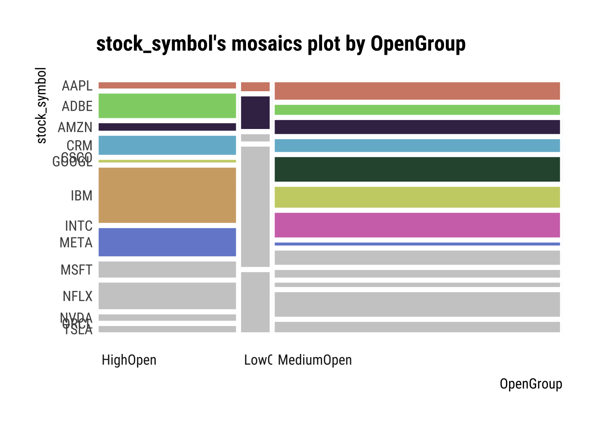

Correlating Like a Data Master: Assess relationships within a novel data set using publication quality tables and plots.
Author
Shashwat Singh
Correlating Like a Data Master
Required setup
if (!require(pacman))install.packages("pacman")
Loading required package: pacman
pacman::p_load(colorblindr, dlookr, formattable, GGally, ggdist, ggpubr, ggridges, here, tidyverse)# Set global ggplot() theme# Theme pub_clean() from the ggpubr package with base text size = 16theme_set(theme_pubclean(base_size =12)) # All axes titles to their respective far right sidestheme_update(axis.title =element_text(hjust =1))# Remove axes tickstheme_update(axis.ticks =element_blank()) # Remove legend keytheme_update(legend.key =element_blank())
Load and Examine a Data Set
Using the dataset from tidyurl- The dataset contains stock prices of big tech companies and tries to analyse the collapse of “Big Tech” stock prices. The data comes from Yahoo Finance via Kaggle
# Loading the datasetdataset <-read.csv("data/big_tech_stock_prices.csv") # Formattable datadataset |>head() |>formattable()
stock_symbol
date
open
high
low
close
adj_close
volume
AAPL
2010-01-04
7.622500
7.660714
7.585000
7.643214
6.515213
493729600
AAPL
2010-01-05
7.664286
7.699643
7.616071
7.656429
6.526476
601904800
AAPL
2010-01-06
7.656429
7.686786
7.526786
7.534643
6.422664
552160000
AAPL
2010-01-07
7.562500
7.571429
7.466071
7.520714
6.410790
477131200
AAPL
2010-01-08
7.510714
7.571429
7.466429
7.570714
6.453412
447610800
AAPL
2010-01-11
7.600000
7.607143
7.444643
7.503929
6.396483
462229600
Describe and Visualize Correlations
Correlations are a statistical relationship between two numerical variables, may or may not be causal. Exploring correlations in your data allows you determine data independence, a major assumption of parametric statistics, which means your variables are both randomly collected.
# Table of correlations between numerical variables (we are sticking to the default Pearson's r coefficient)correlate(dataset) |>formattable()
var1
var2
coef_corr
high
open
0.9998560
low
open
0.9998267
close
open
0.9996772
adj_close
open
0.9944807
volume
open
-0.2245188
open
high
0.9998560
low
high
0.9997612
close
high
0.9998365
adj_close
high
0.9948710
volume
high
-0.2233435
open
low
0.9998267
high
low
0.9997612
close
low
0.9998407
adj_close
low
0.9943504
volume
low
-0.2260704
open
close
0.9996772
high
close
0.9998365
low
close
0.9998407
adj_close
close
0.9947827
volume
close
-0.2246948
open
adj_close
0.9944807
high
adj_close
0.9948710
low
adj_close
0.9943504
close
adj_close
0.9947827
volume
adj_close
-0.2134037
open
volume
-0.2245188
high
volume
-0.2233435
low
volume
-0.2260704
close
volume
-0.2246948
adj_close
volume
-0.2134037
dataset |>plot_correlate()
The variable’s correlation is very high and it makes sense. This is because the variables open, low, high and close of a stock price do not change a lot for a particular day and very close to each other. This will be visible throughout the various correlation operations below.
Visualize Correlations within Groups
If we have groups that we will compare later on, it is a good idea to see how each numerical variable correlates within these groups.
dataset <- dataset |>mutate(OpenGroup =ifelse(open >=1& open <=10, "LowOpen", ifelse(open >10& open <=100, "MediumOpen", "HighOpen")) )
dataset |>group_by(OpenGroup) |>plot_correlate()
Warning: 'plot_correlate' is deprecated.
Use 'plot.correlate' instead.
See help("Deprecated")
This is great, we have our correlations within groups! However, the correlation matrices aren’t always the most intuitive, so let’s plot!
We will be using the ggpairs() function within the GGally package. Specifically, we are looking at the correlations between predawn leaf water potential pLWP and midday leaf water potential mLWP. Leaf water potential is a key indicator for how stressed plants are in droughts.
`stat_bin()` using `bins = 30`. Pick better value with `binwidth`.
`stat_bin()` using `bins = 30`. Pick better value with `binwidth`.
Describe and Visualize Relationships Based on Target Variables
Target Variables
Target variables are essentially numerical or categorical variables that you want to relate others to in a data frame. dlookr does this through the target_by() function, which is similar to group_by() in dplyr. The relate() function then briefly analyzes the relationship between the target variable and the variables of interest.
The relationships below will have the formula relationship target ~ predictor
# First, we need to remove NAs, they cause an errordataset.noNA <- dataset |>drop_na()# The numerical predictor variable that we wantnum <-target_by(dataset.noNA, close)# Relating the variable of interest to the numerical target variablenum_num <-relate(num, open)# Summary of the regression analysis - the same as the summary from lm(Formula)summary(num_num)
Call:
lm(formula = formula_str, data = data)
Residuals:
Min 1Q Median 3Q Max
-49.840 -0.372 -0.032 0.373 55.290
Coefficients:
Estimate Std. Error t value Pr(>|t|)
(Intercept) 0.0634242 0.0161787 3.92 8.86e-05 ***
open 0.9993424 0.0001196 8355.10 < 2e-16 ***
---
Signif. codes: 0 '***' 0.001 '**' 0.01 '*' 0.05 '.' 0.1 ' ' 1
Residual standard error: 2.581 on 45086 degrees of freedom
Multiple R-squared: 0.9994, Adjusted R-squared: 0.9994
F-statistic: 6.981e+07 on 1 and 45086 DF, p-value: < 2.2e-16
# Plotting the linear relationshipplot(num_num)
Numerical Target Variables: Categorical Variable of Interest
Formula: pLWP (numerical response) ~ Group (categorical predictor)
# The categorical predictor variable that we wantnum <-target_by(dataset, stock_symbol)
Warning in target_by_impl(.data, vars): The target variable was assigned a
character type.
# We need to change Group to a factornum$OpenGroup <-as.factor(num$OpenGroup)# Relating the variable of interest to the numerical target variablenum_cat <-relate(num, OpenGroup)# Summary of the ANOVA analysis - the same as the summary from anova(lm(Formula))summary(num_cat)
Call: xtabs(formula = formula_str, data = data, addNA = TRUE)
Number of cases in table: 45088
Number of factors: 2
Test for independence of all factors:
Chisq = 28888, df = 26, p-value = 0
Warning: This manual palette can handle a maximum of 9 values. You have
supplied 14.

Categorical Target Variables: Numerical Variable of Interest
Note that this produces descriptive statistics, unlike the other relationships we are looking at.
Formula: Group (categorical) ~ pLWP (numerical)
# The categorical predictor variable that we wantcateg <-target_by(dataset, OpenGroup)# Relating the variable of interest to the numerical target variablecat_num <-relate(categ, close)# Summary of descriptive statisticssummary(cat_num)
described_variables OpenGroup n na
Length:4 Length:4 Min. : 3255 Min. :0
Class :character Class :character 1st Qu.:11140 1st Qu.:0
Mode :character Mode :character Median :20916 Median :0
Mean :22544 Mean :0
3rd Qu.:32321 3rd Qu.:0
Max. :45088 Max. :0
mean sd se_mean IQR
Min. : 4.989 Min. : 2.626 Min. :0.04603 Min. : 4.277
1st Qu.: 31.606 1st Qu.: 16.747 1st Qu.:0.10755 1st Qu.: 22.654
Median : 64.875 Median : 61.523 Median :0.30325 Median : 65.880
Mean : 85.849 Mean : 58.889 Mean :0.39725 Mean : 61.753
3rd Qu.:119.118 3rd Qu.:103.666 3rd Qu.:0.59295 3rd Qu.:104.979
Max. :208.659 Max. :109.884 Max. :0.93648 Max. :110.975
skewness kurtosis p00 p01
Min. :0.4737 Min. :-1.0795 Min. : 1.053 Min. : 1.346
1st Qu.:0.7586 1st Qu.:-0.2504 1st Qu.: 1.053 1st Qu.: 1.877
Median :1.3457 Median : 1.6672 Median : 5.316 Median : 6.657
Mean :1.3712 Mean : 2.2177 Mean :26.659 Mean : 29.191
3rd Qu.:1.9583 3rd Qu.: 4.1354 3rd Qu.:30.921 3rd Qu.: 33.972
Max. :2.3197 Max. : 6.6161 Max. :94.950 Max. :102.102
p05 p10 p20 p25
Min. : 1.648 Min. : 1.885 Min. : 2.353 Min. : 2.99
1st Qu.: 5.131 1st Qu.: 10.598 1st Qu.: 16.841 1st Qu.: 18.82
Median : 10.044 Median : 14.788 Median : 21.773 Median : 24.88
Mean : 32.996 Mean : 37.409 Mean : 44.183 Mean : 47.29
3rd Qu.: 37.908 3rd Qu.: 41.598 3rd Qu.: 49.116 3rd Qu.: 53.35
Max. :110.247 Max. :118.174 Max. :130.834 Max. :136.41
p30 p40 p50 p60
Min. : 3.183 Min. : 3.663 Min. : 4.343 Min. : 5.043
1st Qu.: 20.483 1st Qu.: 23.675 1st Qu.: 27.553 1st Qu.: 32.784
Median : 27.490 Median : 33.671 Median : 41.630 Median : 52.481
Mean : 49.804 Mean : 56.038 Mean : 63.771 Mean : 73.796
3rd Qu.: 56.811 3rd Qu.: 66.034 3rd Qu.: 77.848 3rd Qu.: 93.494
Max. :141.052 Max. :153.149 Max. :167.482 Max. :185.180
p70 p75 p80 p90
Min. : 6.366 Min. : 7.267 Min. : 8.132 Min. : 9.14
1st Qu.: 38.206 1st Qu.: 41.477 1st Qu.: 44.632 1st Qu.: 57.75
Median : 76.295 Median : 90.760 Median :101.596 Median :141.24
Mean : 95.238 Mean :109.043 Mean :121.519 Mean :161.61
3rd Qu.:133.326 3rd Qu.:158.327 3rd Qu.:178.484 3rd Qu.:245.10
Max. :221.995 Max. :247.385 Max. :274.754 Max. :354.83
p95 p99 p100
Min. : 9.482 Min. : 9.96 Min. : 11.32
1st Qu.: 67.202 1st Qu.: 74.99 1st Qu.: 80.89
Median :191.396 Median :302.22 Median :397.88
Mean :217.031 Mean :306.63 Mean :374.69
3rd Qu.:341.224 3rd Qu.:533.86 3rd Qu.:691.69
Max. :475.851 Max. :612.15 Max. :691.69
plot(cat_num)
Categorical Target Variables: Categorical Variable of Interest
# Create new categorical columncat_dataset <- dataset |>select(close, OpenGroup) |>drop_na() |>mutate(HighClose =ifelse( close > (mean(close +sd(close))), "Yes", "No"))# New dataset cat_dataset |>head() |>formattable()
close
OpenGroup
HighClose
7.643214
LowOpen
No
7.656429
LowOpen
No
7.534643
LowOpen
No
7.520714
LowOpen
No
7.570714
LowOpen
No
7.503929
LowOpen
No
Now we have two categories!
Formula = HighClose (categorical) ~ OpenGroup (categorical response)
# The categorical predictor variable that we wantcateg <-target_by(cat_dataset, HighClose)# Relating the variable of interest to the categorical target variablecat_cat <-relate(categ, OpenGroup)# Summary of the Chi-square test for Independencesummary(cat_cat)
Call: xtabs(formula = formula_str, data = data, addNA = TRUE)
Number of cases in table: 45088
Number of factors: 2
Test for independence of all factors:
Chisq = 13191, df = 2, p-value = 0